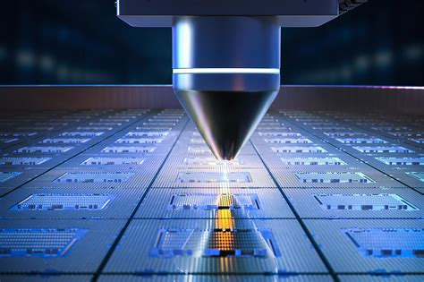

Génie Physique
Introduksjon
Etter to år med MIC begynner man på GP, som har er helt eget bygg med samme navn som linjen : Génie Physique. Programmet er preget av mye kvantefysikk, mikro og nanoteknologi, instrumentering og mye lab. Det er enda mer prosjektarbeid, og færre forelesninger og eksamener.
Typiske prosjekter i IR
- Instrumenteringsprosjekt (Lag et spill eller noe kreativt)
- Solsellefremstilling (På renrom med AE-spesialiseringen)
- Transistorfremstilling (To uker på renrom med mål om å forstå dagens viktigste teknologi)
- Bevegelsessensor (Utvikling av eget kretskort med koding i C for arduino og innsammling av data fra sensoren. Varer nesten hele semesteret og innebærer Git opplæring)
Projet Multidiscipilinaire
- I staren av 4. klasse vil hver elev bli satt i binôme (par) som varer ut hele fjere året (så velg varsomt din partner) Du vil sammen med din binôme bli tildelt et prosjekt som varer fra september til mai. Her kan du enten få et prosjekt innen instrumentering (samle data med Python), fysikk (litografi og halvledere), optikk (linser for mikroskoper) eller flere felt blandet sammen. Disse prosjketene kan være til tider svært krevende og det anbefales derfor å jobbe jevnt og trutt med stoffet. Selve oppgaven utføres for en kunde som, som oftest ikke er fra INSA. Det kan være private bedrifter eller forskningsinstitusjoner som ønsker seg noen erfarne studenter.
4. klasse
Hvert semester er delt i tre fagområder: anvendt fysikk og kondensert materie, instrumentering og prosjekter, og humaniora. Fagoversikten under er hentet fra INSAs egen programside og kan endre seg fra år til år.
Fagene i 4. klasse
Første semester
- Propriétés Physiques de la Matière 1 (fysiske egenskaper til materie)
- Travaux Pratiques Mesures multiphysiques 1 (lab med multifysiske målinger)
- Projet multidisciplinaire
- Électronique et traitement du signal (elektronikk og signalbehandling)
- Instrumentation (instrumentering)
- Droit (rett)
- Finance (finans)
- Stratégie d'entreprise responsable (ansvarlig bedriftsstrategi)
- LV2 (andre fremmedspråk)
- APS (gym)
Andre semester
- Propriétés Physiques de la Matière 2 (fysiske egenskaper til materie)
- Scénarios de transition écologique (scenarier for grønn omstilling)
- Travaux Pratiques Mesures multiphysiques 2 (lab med multifysiske målinger)
- Du capteur au banc de test (fra sensor til testbenk, med mikrokontrollere og open source-maskinvare)
- Projet multidisciplinaire II
- SQAMM (sikkerhet, kvalitet og anvendelse innen måling og mikroteknologi)
- LV1 (fremmedspråk)
- Prospective et imaginaires du futur (framtidsstudier)
- PPI (karriereveiledning)
- APS (gym)
Istrum og Nanotech
Før man begynner i 5. klasse har man valget mellom Instrum (Instrumentation) og Nanotech (Nanoteknologi og fysikk). Instrum har mer fokus på instrumentering og elektronikk, mens Nanotech har mer fag innen fysikk. De som går Nanotech velger ofte å følge på med en doktorgrad etter ingeniørgraden.
Instrum
Instrumentation, Tests et Mesures
Avansert instrumentering, med fag som Instrumentation avancée 1 og 2 og Wireless Communications.
Nanotech
Micro-Nano Physique et Applications
Nanofysikk og kvanteteknologi, med fag som Nano-Physique et Nano-Chimie.
5. klasse
Første semester følger retningen du har valgt. Andre semester er et avsluttende internship (stage 5A, også kalt PFE).
Fagene i 5. klasse, første semester
Felles for Instrum og Nanotech
- Physique appliquée et communication scientifique en langue étrangère (anvendt fysikk og vitenskapelig kommunikasjon på fremmedspråk)
- Ingénierie physique et valorisation (fysikkingeniørfag og verdiskaping)
- Instrumentation-Projet (instrumenteringsprosjekt)
- NanoBioIngénierie (nanobioingeniørfag)
- Systèmes Micro-Nano-Électro-Mécaniques (mikro- og nanoelektromekaniske systemer)
- Matériaux 2D (2D-materialer)
- Optique de particules chargées (optikk for ladde partikler)
Kun Instrum
- Instrumentation avancée 1 og 2 (avansert instrumentering)
- Wireless Communications (trådløs kommunikasjon)
- Middleware and Services
Kun Nanotech
- Nano-Physique et Nano-Chimie (nanofysikk og nanokjemi)
- Technologies, Matériaux et Dispositifs Innovants (teknologier, materialer og innovative komponenter)
- Nano-capteur (nanosensorer)
Samt humaniora
- Psychologie sociale et éthique (sosialpsykologi og etikk)
- Management d'équipe (teamledelse)
- APS (gym)
- PPI (karriereveiledning)
Det finnes også tverrfaglige fordypninger som flere institutter kan ta, kalt PTP (Parcours Transverses Pluridisciplinaires). Disse er oppført under GP i 5. klasse:
Etter studiet
Ifølge INSA jobber GP-ingeniører med forskning og utvikling, produksjon, kvalitet, ledelse og innkjøp, blant annet innen energi, transport, luft- og romfart, kommunikasjon og helse. Etter graden kan man også gå videre til doktorgrad eller en spesialisert master (mastère spécialisé), eller starte eget firma.
Mer informasjon finnes på instituttets nettside og på INSAs programside for Génie Physique.